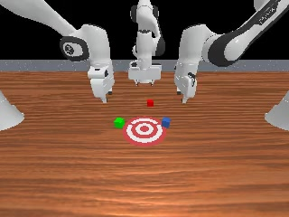
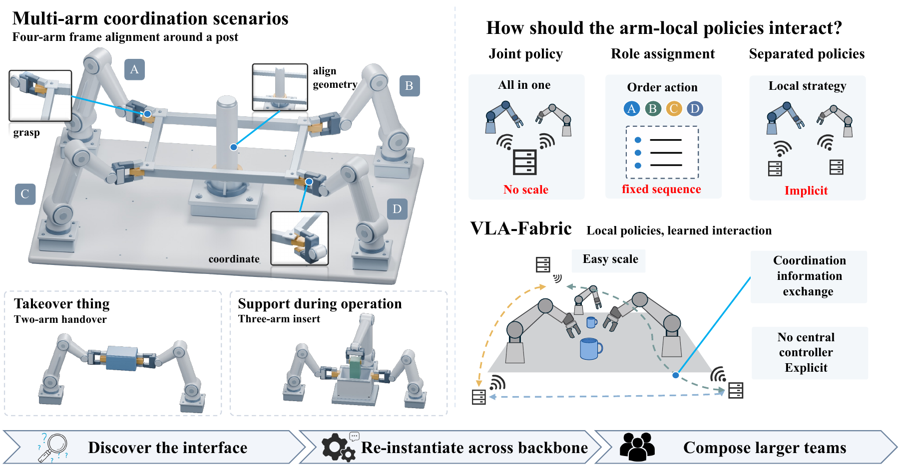
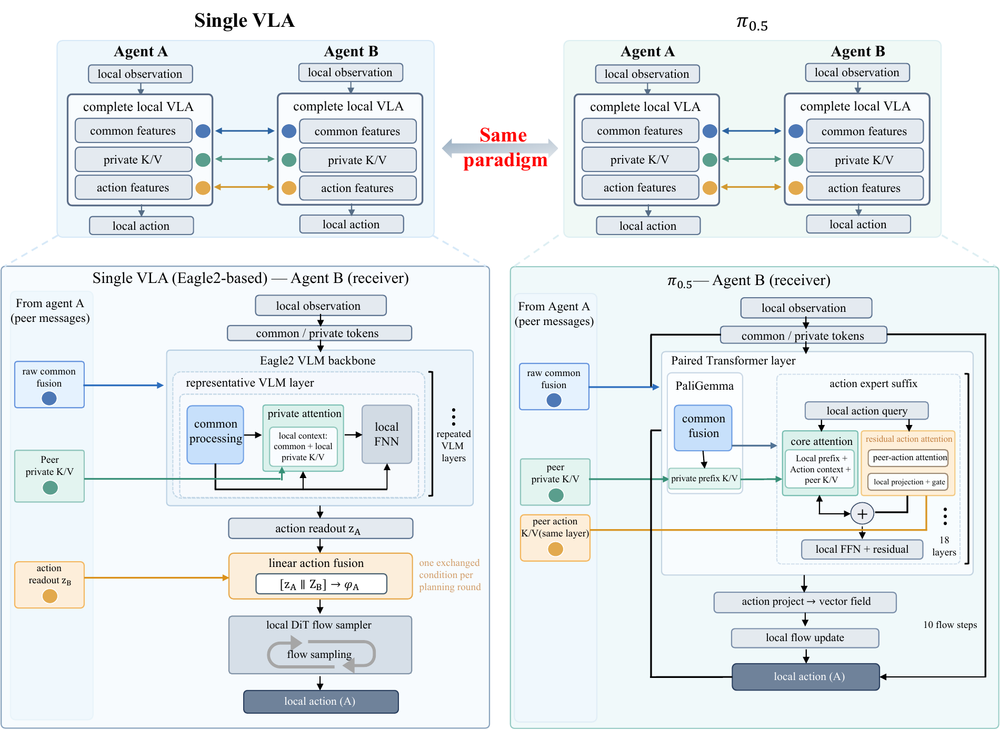
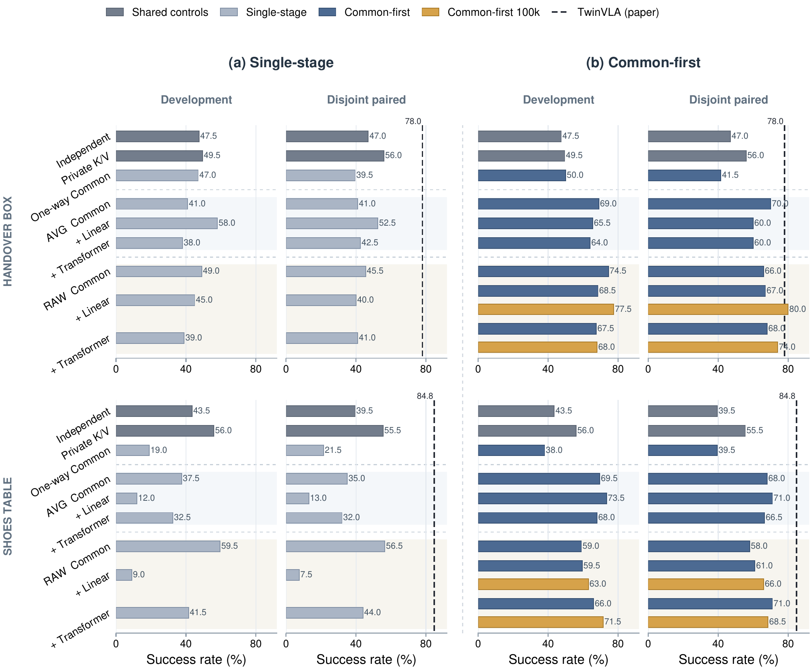
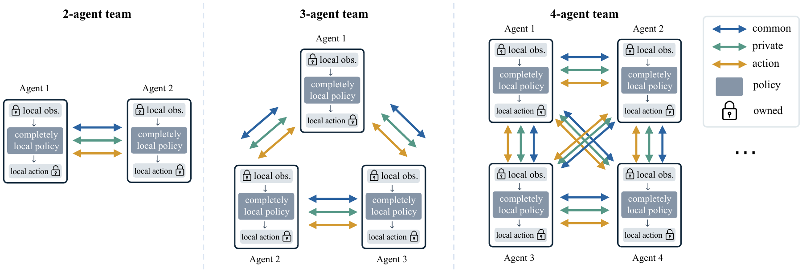
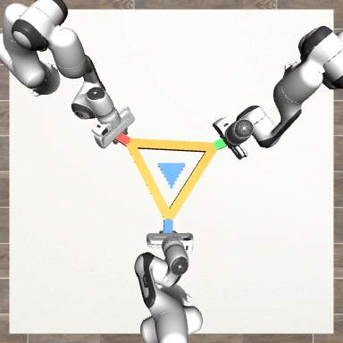
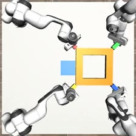

3 arms
91.0%Stack Cube
Sequential placement with distinct local action policies.
Multi-arm manipulation · inter-policy coordination
Learning coordination between complete VLA agents.
Each arm retains a local observation stream, a complete action-producing policy, and its own action output. Learned representations let these policies coordinate across explicit agent boundaries.

01 / Overview
Centralized multi-arm policies resolve cross-arm dependencies within one model. VLA-Fabric instead makes the policy boundary explicit: each agent owns its local perception and action generation, while selected internal representations carry peer information into its computation.
We study this organization in three steps. A controlled bimanual study identifies useful interaction designs; a second implementation realizes the same coordination functions in a different VLA architecture; task-adapted teams then extend the organization to three and four arms.
02 / Interaction
The interface organizes peer information by its role in action generation, rather than requiring identical tensor addresses in every backbone.
Common representations support a team-level view of the task.
Local queries select relevant peer information through exposed keys and values.
Peer action state conditions the receiving policy near action generation.

03 / Discovery
On Handover Box and Shoes Table, the study varies interaction entry, Common aggregation, action operator, and fine-tuning protocol. The comparison shows that providing peer information does not, by itself, ensure that a policy learns to use it.

04 / Evidence
The reported success rates below come from task-adapted policies evaluated on 200 conditions per setting. The bimanual implementations use separate pretrained VLA families; their scores describe system capability, not an isolated ranking of backbones.
| Policy | Handover Box | Shoes Table | Handover Mic |
|---|---|---|---|
| Eagle2-Fabric | 80.0% | 70.0% | 84.0% |
| π0.5-Fabric | 80.5% | 94.5% | 97.5% |
These are separate task-specific checkpoints. Models and evaluation details are documented with the code; no centralized-reference or no-interaction effect is inferred from this cross-family table.
Different tasks probe different coordination demands; their success rates are not an arm-count scaling curve.


Sequential placement with distinct local action policies.

Asymmetric support and shared-frame alignment.

Simultaneous manipulation of a shared object.
Simulation success on 200 frozen conditions per task. Images illustrate task geometry and are not all taken from the reported π0.5 evaluations.
05 / Code
The release contains the controlled Eagle study and the π0.5 implementation, including 2/3/4-agent workflows. Pretrained backbones, datasets, checkpoints, and cluster-specific launch material are obtained separately.
git clone https://github.com/anonymous-0525/VLA-Fabric.git
cd VLA-Fabric
python -m pytest -q tests